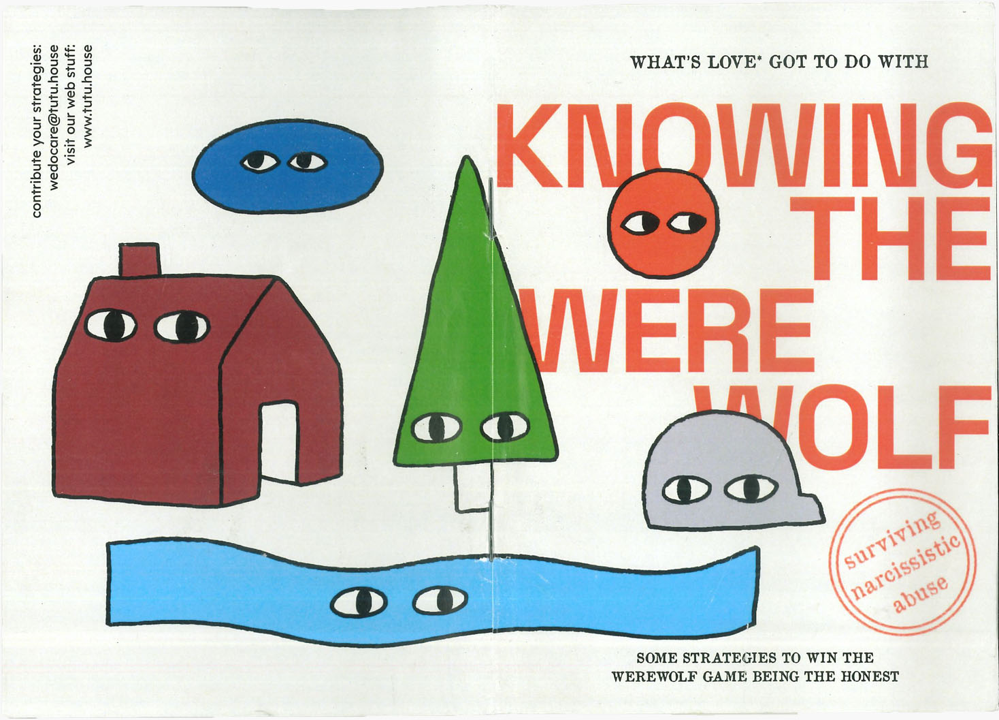

Making A Fuss creates a language for engagement within a system rooted in fear, control, and a rejection of engagement. Daring To Archive is a material-discursive practice that inscribes an ongoing mark of fussing into the world-scape. These archives may take the form of informal gatherings, gossip, storytelling, fiction-making, and more. Fussing and archiving expand existing realities, contaminate them, challenge and complicate them. Contamination makes diversity, which makes staying alive—for every species—possible. Yet when we speak of life, we must also know of the dead. In this metaconversation, I explain Knowing the Werewolf, the third zine in the series, and why it is vital to understanding love through knowing the dead effectively.
A fertile land for abuse and lies
The construction of the contemporary nuclear family is fertile soil for abuse. bell hooks writes in All About Love, "In our culture the private family dwelling is the one institutionalized sphere of power that can easily be autocratic and fascistic."
Many children are raised in homes where some degree of care is given, but love may not be present. Behind closed doors, millions of children are verbally and physically abused every day—environments where neglect, chaos, and coercion reign…
Through my formal training and lived encounters across Nepal, Japan, Italy, Denmark, and the US, I have come to resonate with hooks’ claim: "Adults across lines of class, race, and gender indict the family." Many of us reading this had been smacked, grabbed, beaten, lied to, coerced, violated, blamed, shamed, gaslit, ignored, or threatened with love withdrawal…
Yet, across cultures, we rarely intervene to question or challenge how our peers raise their children. hooks concludes that we are victims of intimate terrorism… In the pandemic of lovelessness, we cannot tell love from abuse.
Abuse and neglect negate love. Care and affirmation, the opposite of abuse and humiliation, are the foundation of love. No one can rightfully claim to be loving when behaving abusively. Yet parents do this all the time in our culture. Children are told they are loved even though they are abused. (All About Love, 22)
Children often get hurt by adults who themselves never learned of love. Still, "they will cling to the misguided assumption that their parents love them even in the face of remembered abuse, usually by denying the abuse and focusing on random acts of care (All About Love, 25)." To survive emotionally, the child must idealize their parents.
In my home country, the mother’s embrace is an eternal symbol of safety and perfect love. I call this the cult of the irrefutable mother (or parents)—a totalitarian regime that gaslights and censors diverging experiences of parenthood, where violence is justified as love, and gentleness becomes conditional luxury.
Ăn cho roi cho vọt, ghét cho ngọt cho bùi.
A Vietnamese proverb: Loving means the rod and the whip; hating gives sweetness and softness.
Japanese equivalent: 愛の鞭 ("The whip of love")
And the famous international lies:
It hurts me more than it hurts you.
This is for your own good.
John Bradshaw calls this confusion mystification. In Creating Love, he writes: "I was brought up to believe that love is rooted in blood relationships. You naturally loved anyone in your family. Love was not a choice… [yet] even with the best intentions our parents often confused love with what we would now call abuse."
Raised in a culture that cannot distinguish love from abuse, it is no wonder that we become confused in adulthood. Thanks to the emergence of pop psychology, we now learn that the more we idealize our childhood and family, the more we deny existing pain and become prisoners of illusion.
"Experience has taught us that we have only one enduring weapon in our struggle against mental illness: the emotional discovery of the truth about the unique history of our childhood." (Alice Miller, Drama of the Gifted Child, 3)
My commitment to being honest in daily life has been met with the frequent drag of being seen as a "freak", "naive", or even "cruel". I write these lines fully aware that we live in a subversive culture where liars and deceivers often rise to the top. Perhaps that is why since childhood play-pretend to party games, practice lying becomes entertainment.
When truth-telling is repressed in favor of fictional stability, children quickly learn that to be accepted, they must perform a false self. This normalization of lies may offer temporary comfort, but it blocks our capacity to know love, feel safe, and discern manipulation.
The cover of Knowing The Werewolf.
I created Knowing The Werewolf to talk about abusive relationships. I was raised in a perfect family, praised for academic excellence and social achievements. Yet at home, I was routinely shamed, lied to, gaslit, controlled by my own mother, and neglected by my father who wasn’t present enough to intervene. These family dynamics became blindspots that nearly cost me my life in adulthood. This zine is an attempt to initiate honest conversations about the dramas that are happening all around us in projects, relationships, institutions, and organizations.
Daily truth-speaking may not be convenient, but it is the most effective practice against distortions. It enables clarity and insight. It makes it harder for others to project or be manipulative. It helps us discern self-contained individuals who resist truth to preserve self-interest.
It is in the hope that by creating and widening a language for truth-speaking and discernment, we can learn to tell love from abuse. And from there, we can begin to truly know intimacy.
{kind=link}
{kind=link}
{kind=link}